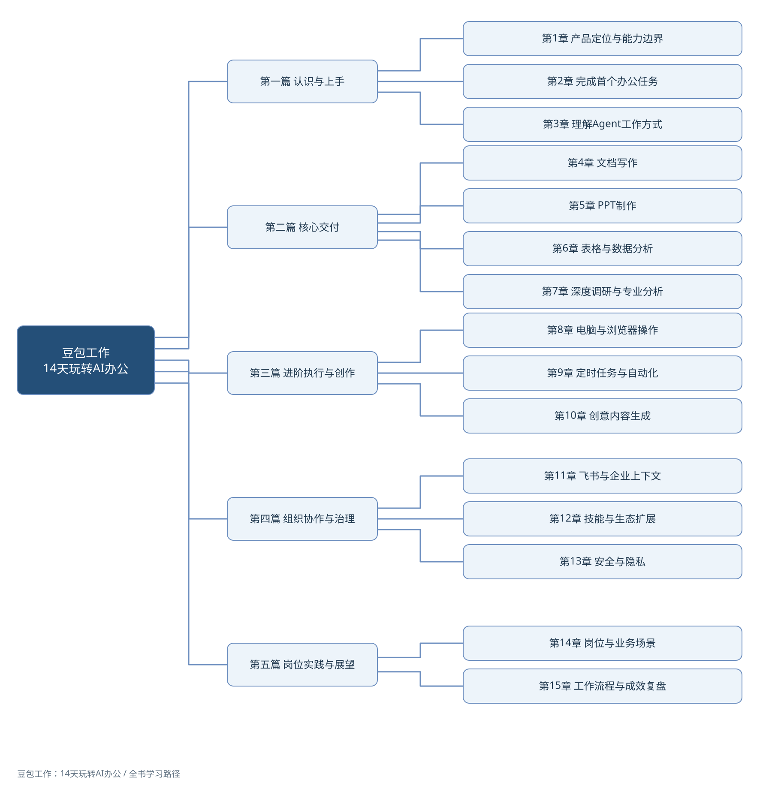

附录C 学习资源与持续实践
本附录保留三类可直接使用的内容：书内配套资料、14天实践路线和核心术语速查。它们分别用于快速定位工具、安排练习和回查概念，不代替各章中的场景、步骤与风险边界。
C.1 本书可直接使用的配套内容
表C-1列出书内配套内容的位置和使用方式。独立文件可从读者资源库首页获取，包括本附录、指令模板、常见问题、章节技能和思维导图。
表C-1 本书配套内容及其使用方式
| 资源 | 位置 | 使用方式 |
|---|---|---|
| 全书与章节思维导图 | 附录C.1及各章末 | 先看知识结构，再按具体任务回到正文 |
| 每章一个可复用技能 | 第1—15章章末 | 复制完整规则与试用输入，对照结果核对点练习 |
| 20条常用指令模板 | 附录A | 先替换占位符，再补充数据源、操作边界和验收标准 |
| 常见问题20问 | 附录B | 按主题定位问题，并用当前官方页面复核版本性信息 |
| 14天可选实践路线 | 附录C.2 | 从与当前工作最相关的一天开始，不要求连续完成 |
| 核心术语速查 | 附录C.3 | 先用通俗解释建立直觉，再回到相关章节理解场景与边界 |
已收录的配套文件以读者资源库首页的目录为准。读者练习时也可使用自行准备的虚拟数据或经过组织允许的脱敏副本。
图C-1展示全书五篇与15章的关系。各章末另有一张章节思维导图，并配有完整的技能规则、试用输入、结果核对点和异常检查。技能用于复用工作方法，实际执行能力仍以当前环境的工具和授权为准。

图C-1 全书思维导图
独立技能文件与可编辑导图同时保存在项目配套资源中。书内已经给出完成练习所需的规则和小样本，即使不使用独立文件，也可以通过复制文本完成第一轮练习；文件形式不代表某个平台已经支持直接导入。
章节技能·即用版中的“打开这里.html”是技能使用入口。下载并解压整个仓库后双击打开，按任务选择章节，再点击“复制示例，马上试用”；正式处理工作时切换到“用我的材料”。页面支持离线使用、单章下载与整套下载。没有技能导入入口的环境，也可以通过复制完整指令使用。
C.2 14天实践路线：每天完成一项可验收成果
这是一条由14个练习组成的可选路线，不是连续打卡要求，也不是速成承诺。读者可以按章节顺序每天完成一项，也可以根据岗位需要分散到数周进行。每次只完成一个范围可控、结果可检查的任务；涉及敏感资料或高影响操作时，改用虚拟数据或经过批准的脱敏副本。
- 第1天：判断产品边界。 阅读第1章，列出三个适合交给办公Agent的任务和三个必须保留人工判断的任务。
- 第2天：完成首次任务。 阅读第2章，在独立工作目录中用无敏感信息的材料生成一份会议纪要，并核对行动项。
- 第3天：写出任务说明书。 阅读第3章，为一个真实任务写清目标、数据源、输出格式、操作边界和失败处理方式。
- 第4天：交付一份正式文档。 阅读第4章，把零散记录整理为结构完整、事实可追溯的纪要、方案或报告。
- 第5天：完成一份演示文稿。 阅读第5章，先确认大纲，再制作并演练一份小型汇报。
- 第6天：完成一次数据分析。 阅读第6章，使用保留原件的样本数据完成清洗、汇总、可视化和结果核验。
- 第7天：完成一项小型调研。 阅读第7章，围绕一个明确问题形成带来源、区分事实与推断的研究短报告。
- 第8天：试跑跨软件任务。 阅读第8章，用少量样本完成一次浏览器或本地文件操作，并练习暂停、检查和恢复。
- 第9天：设计周期任务。 阅读第9章，把一项重复工作写成包含触发条件、数据源、交付位置、告警和人工介入点的自动化方案。
- 第10天：完成多模态交付。 阅读第10章，为真实办公主题制作一项配图、短视频、网页或简易应用原型，并检查素材权利。
- 第11天：使用团队上下文。 阅读第11章；使用飞书的读者可在授权范围内完成一次资料汇总，其他读者可用模拟材料设计上下文清单。
- 第12天：选择扩展能力。 阅读第12章，判断一个稳定流程应使用技能、连接器、工作伙伴还是工作小队，并说明理由与权限需求。
- 第13天：完成安全检查。 阅读第13章，为前12天的一项任务制作权限、数据、日志、异常与回收检查表。
- 第14天：设计岗位工作流。 阅读第14、15章，把自己的高频工作拆成输入、执行、检查和交付环节，标明AI职责、人工责任与效果基线。
完成选定练习后，不必追求每天都使用AI。更重要的是保留成果、核验记录和复盘结论，判断哪些方法值得继续使用、哪些任务不适合自动化，并把稳定经验逐步沉淀为个人或团队规范。
C.3 核心术语速查：先懂大白话，再回到正式名称
这一节用于回查，不代替正文中的场景、步骤和边界说明。遇到陌生术语时，可以先看通俗解释，再回到所列章节理解它在真实任务中怎样使用。
人工智能（Artificial Intelligence，AI）。 泛指让计算机完成识别、生成、预测、规划等任务的技术集合。书中谈到的AI并不是一个具有统一意图的“人”，不同模型、工具和产品能力必须分别核验。
生成式AI。 根据输入和既有模式生成文字、图像、音频、视频或代码的系统。它擅长形成候选内容，但输出流畅不等于事实正确，参见第4、7和10章。
大模型。 通过大规模数据和计算训练、能够处理多类语言或内容任务的基础模型。它提供理解与生成能力，但不是实时更新的事实数据库，也不能替代来源核验。
智能体（Agent）。 围绕目标规划步骤，并在条件允许时调用工具推进任务的系统。能执行多步操作不等于可以独立承担判断和责任，参见第1和3章。
办公Agent。 本书对面向办公任务、能够读取材料、调用办公工具并形成交付物的一类智能体系统的统称。它强调任务链，而不是某一个具体按钮或模型。
上下文。 系统理解当前任务所需的背景，包括指令、材料、身份、历史状态和组织规则。上下文越多不一定越好，错误、过期或越权材料会把任务带向错误方向，参见第3和11章。
多模态。 能够处理文字之外的图片、语音、音频或视频等信息形式。支持某种格式只说明系统能够读取或生成，并不保证识别、事实和版权状态自动正确。
工具调用。 系统使用搜索、计算、文件、浏览器或其他软件能力完成动作。每次调用仍受产品能力、用户授权和任务边界限制，参见第3和8章。
工作流。 为完成一项工作而组织起来的步骤、交接关系和检查规则。它不只是一串操作，还要说明输入、异常、责任和交付标准。
执行环境。 任务实际运行并接触文件或系统的位置，例如本地电脑、云端环境或浏览器。环境不同，可访问的数据、持续时间和风险也不同，参见第3和8章。
指令。 用户对一次任务的说明，至少应交代目标、材料和期望结果；长任务还要补充操作边界、检查点和失败处理。指令不是免除核验责任的“口令”。
验收标准。 判断成果是否可以采用的一组可观察条件，例如数字能够复算、文档没有遗漏、文件格式正确、外发对象已经确认。标准越具体，返工和争议越容易定位。
检查点。 任务推进到关键位置时保存状态并进行确认的节点。它让使用者能够在错误扩大前暂停，也为失败后的继续执行提供稳定起点。
人工接管。 系统遇到登录验证、歧义、异常或高影响决定时，把控制交回给人。接管不是自动化失败，而是受控流程的一部分。
回滚与恢复。 回滚是把文件、数据或配置退回到此前状态；恢复是让业务在异常后重新可用。发送、公开发布等动作未必能够完全回滚，因此执行前仍需确认，参见第8和13章。
技能。 把验证过的输入条件、处理步骤、异常分支和验收标准封装为可复用方法。一次偶然成功的指令还不能称为稳定技能，参见第12章。
连接器。 让任务在授权范围内读取或写入外部系统的连接能力。连接器缩短数据搬运，却同时引入账号、权限、接口变化和退出管理问题。
模型上下文协议（Model Context Protocol，MCP）。 一种让AI应用以相对统一的方式发现和使用外部工具或数据源的协议。协议解决连接方式，不会自动解决身份认证、最小权限和数据合规问题，参见第12章。
工作伙伴。 围绕研究、分析、开发或设计等专业角色组织的能力入口。角色名称只能帮助理解分工，不能代替对实际工具、输入和交付质量的核验。
工作小队。 多个智能体围绕同一成果分担子任务的协作方式。只有子任务能够清楚分工、独立验收且整合成本可控时，组队才可能产生价值，参见第12章。
最小权限。 只授予完成当前任务所必需的账号、目录、数据和操作能力，并限定范围与时间。权限越大并不代表任务越容易成功，参见第8和13章。
操作留痕与审计。 记录谁在何时使用了什么输入、执行了哪些关键动作、产生了什么结果以及由谁确认。记录的目的不是堆积日志，而是能够在异常或争议发生后还原过程。
证据链。 从结论回到原始来源、提取内容、处理步骤和判断依据的可追溯关系。多个网页重复同一消息不等于形成了独立证据，参见第7章。
数据口径。 一个指标的定义、时间范围、统计对象、计算方法和排除规则。名称相同的数字如果口径不同，不能直接比较或合并，参见第6章。
工具会持续变化，方法也需要迭代。相对稳定的原则是把规则清晰、可核验的重复工作交给系统，把事实核查、价值判断和责任承担留给人。学习的重点不是追逐每一个新入口，而是在真实任务中持续记录、复盘并改进自己的协作方法。